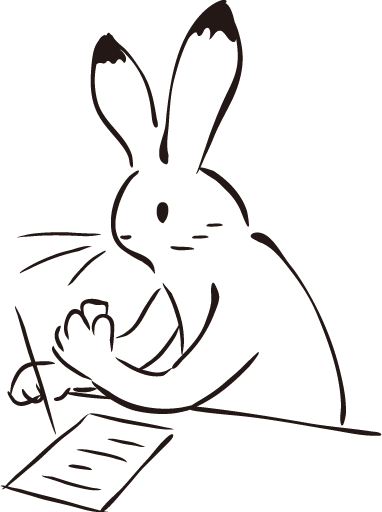
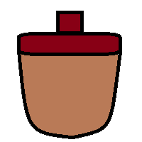
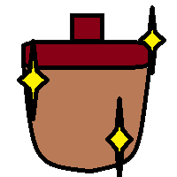
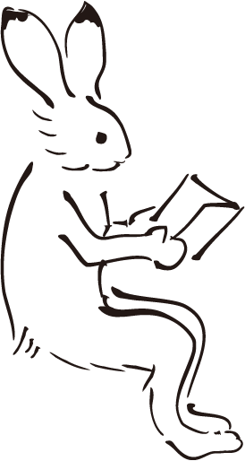
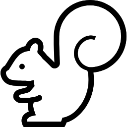
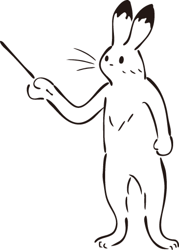
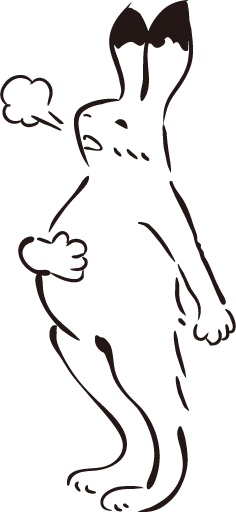
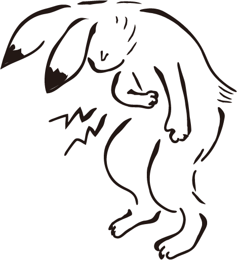
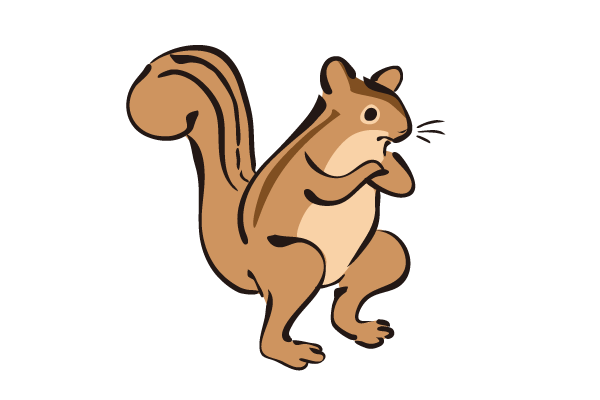

(規則請往上拉開即可閱讀)
(配置參考與全卡片請點此)
故事
冬天即將來臨！為了要過冬，松鼠們必須收集松果並將松果妥善保存才能夠順利度過冬天。
松鼠們也可以透過花費一些松果(時間)來學習如何更好地保存松果，或找到更容易獲得松果的地方。
無論如何，別忘了得在冬天來臨前做足準備呀！
簡介
松果分成一般松果跟保存松果，保存松果(勝利目標)要透過行動用基本松果換取。
場面主要分為兩區，上半區是玩家的執行行動區，對應到骰子的6面，根據擲骰行動。
下半區是市場區 ，每回合玩家可以利用松果購買此區的行動，放到自己的行動區裡。
，每回合玩家可以利用松果購買此區的行動，放到自己的行動區裡。
起始設置
一開始玩家會獲得2顆基本松果，並選擇一個位置放置初始行動卡片(產生3基本松果)。
勝敗條件
在盡快的時間內蒐集到7個保存松果就代表成功過冬，否則當牌庫無法把市場區場上補滿，也就是牌庫耗盡後的下回合就失敗了。
回合流程
1.每回合開始時，先擲骰進行行動，再進行購買。
2.行動階段：根據擲出的骰子進行對應格子的行動。擲骰格為空，則視為獲得2個松果，產生保存松果行動選擇不產生也是獲得2個松果。
3.購買階段：購買的價格為該張牌左上數字加上所在格子編號的價格，無法或不想購買時可選擇跳過(最右牌背)。
4.放置階段(無購買則跳過此階段)：購買後得牌可以自己選擇要放到哪個位置，未放滿前不可重複，放滿後可覆蓋。
5.市場整理：回合結束後，此回合沒有購買的話最左邊一張會被棄掉(有購買則不另外棄)，空下來的位置會向左邊靠攏，並從牌庫抽出新的牌補上。將回合計數+1，接著進行新回合的行動階段(2)。
素材來源